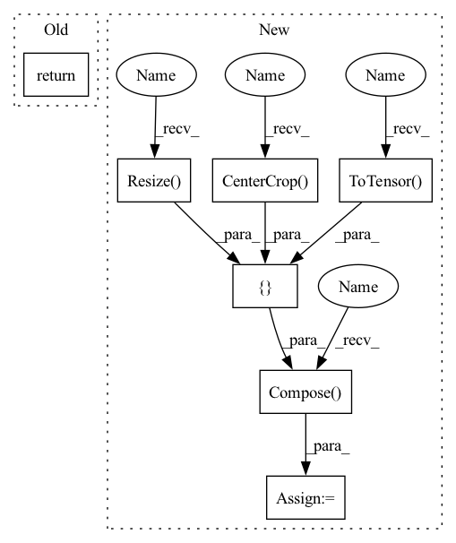

Pattern ID :30914

Before Change
class DefaultTransforms(BaseTransforms):
def __call__(self, input, target=None):
return self.transform(input)
def load_transforms(self):
return transforms.Compose(
After Change
class DefaultTransforms(BaseTransforms):
def __call__(self, input, target=None):
transform = transforms.Compose(
[
transforms.ToPILImage(),
transforms.Resize(256),
transforms.CenterCrop(224),
transforms.ToTensor(),
]
)
return transform(input)
In pattern: SUPERPATTERN
Frequency: 3
Non-data size: 7
Instances
Fragment ID: 91005245
Project Name: biasvariancelabs/aitlas
Commit Name: a4cfa306e3bf95becdab4ea79f28cff90791d592
Time: 2020-10-30
Author: ivan.kitanovski@gmail.com
File Name: aitlas/transforms/default.py
M Class Name: DefaultTransforms
N Class Name: DefaultTransforms
M Method Name: __call__(3)
N Method Name: __call__(3)
M Parent Class: BaseTransforms
N Parent Class: BaseTransforms
M File Name: aitlas/transforms/default.py
N File Name: aitlas/transforms/default.py
M Start Line: 8
M End Line: 8
N Start Line: 8
N End Line: 16
'>
Before Change
shape = (1, 3, 224, 224)
def get_dataset(self, train: bool, directory: str, download: bool = False) -> Dataset:
return ImageNet(root=directory, train=train, transform=ToTensor(), download=download)
// TODO: the standard transform for imagenet needed to be added here!!
After Change
])
return ImageFolder(directory, transform=train_transform)
else:
test_transform = transforms.Compose([
transforms.Resize(256),
transforms.CenterCrop(224),
transforms.ToTensor(),
self._normalize,
])
return ImageFolder(directory, transform=test_transform)
// TODO: we probably need to rethink the class structure :)
'>
Fragment ID: 91005246
Project Name: hpi-xnor/bitorch
Commit Name: 680aa9328d0683212351307da8d5ebce48e78b1e
Time: 2021-09-16
Author: Jopyth@users.noreply.github.com
File Name: bitorch/datasets/imagenet.py
M Class Name: ImageNetDataset
N Class Name: ImageNetDataset
M Method Name: get_dataset(4)
N Method Name: get_dataset(4)
M Parent Class: BasicDataset
N Parent Class: BasicDataset
M File Name: bitorch/datasets/imagenet.py
N File Name: bitorch/datasets/imagenet.py
M Start Line: 14
M End Line: 14
N Start Line: 20
N End Line: 38
'>
Before Change
@staticmethod
def get_transform(**kwargs) -> transforms.ToTensor:
return transforms.ToTensor()
def get_dataloader(self, mode: str = None, dataset: Dataset = None, batch_size: int = None, shuffle: bool = None,
num_workers: int = None, pin_memory=True, drop_last=False, **kwargs) -> torch.utils.data.DataLoader:
After Change
transforms.RandomHorizontalFlip(),
transforms.ToTensor()])
else:
transform = transforms.Compose([
transforms.Resize((256, 256)),
transforms.CenterCrop((224, 224)),
transforms.ToTensor()])
// BiT transform
// transform = transforms.Compose([
// transforms.Resize((480, 480)),
// transforms.ToTensor()])
'>
Fragment ID: 91005243
Project Name: ain-soph/trojanzoo
Commit Name: cf7ccaf11006e950753df4f34566455d9017b2a4
Time: 2021-03-06
Author: ain-soph@live.com
File Name: trojanvision/datasets/imageset.py
M Class Name: ImageSet
N Class Name: ImageSet
M Method Name: get_transform(1)
N Method Name: get_transform(0)
M Parent Class: Dataset
N Parent Class: Dataset
M File Name: trojanvision/datasets/imageset.py
N File Name: trojanvision/datasets/imageset.py
M Start Line: 33
M End Line: 33
N Start Line: 32
N End Line: 47